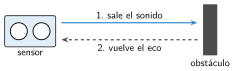
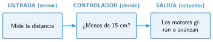

Un robot que esquiva obstáculos
🤔 Pienso5 min
Qué hago aquí: Piensa un momento y contesta con lo que ya sabes. No pasa nada si no lo sabes: es para empezar.
Cruzas a oscuras una habitación con sillas. ¿Qué haces cuando tocas una?
📖 Leo y aprendo15 min
Qué hago aquí: Lee despacio, mira los dibujos y los ejemplos, y quédate con la idea clave del final.
Un robot autónomo decide solo qué hacer . Usa lo que miden sus sensores.
Para no chocar, usa el sensor de ultrasonidos. Funciona como el eco en una montaña .


✏️ Hago25 min
Qué hago aquí: Haz las actividades en orden. Empieza siempre por las básicas.
Ordena los pasos del sensor: vuelve el eco · sale el sonido · el sonido rebota.
Muestra en pantalla la distancia que mide el sensor. Pon la mano a 5, 10 y 20 cm. Apunta lo que marca.
Copia el programa del ejemplo y pruébalo con cajas. ¿Esquiva las cajas? Marca: Sí A veces No
Cambia 15 cm por 5 cm. ¿Qué pasa? ¿Y con 40 cm?
Añade al programa un sonido o una luz roja cuando el robot vea un obstáculo.
Arregla el programa. Este robot debería esquivar las cajas, pero hace justo lo contrario: gira cuando no hay nada y avanza hacia los obstáculos. Ábrelo y busca el error. ¿Qué has cambiado?
💻 Ábrelo en MakeCode El programa se abre en MakeCode, listo para probar y cambiar.
🚀 Amplío (si quieres saber más)
Qué hago aquí: ¿Has terminado? Lee la curiosidad o elige el reto. Es voluntario.
Si el robot gira siempre a la derecha, se puede quedar atrapado en una esquina. Inventa una forma de que a veces gire a la izquierda.
✅ Compruebo5 min
Qué hago aquí: Contesta sin mirar la ficha y marca cómo lo llevas.